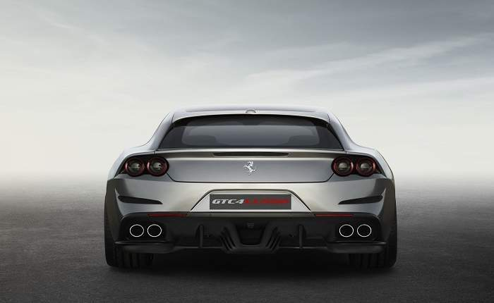
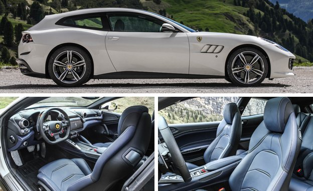

.jpeg)
Ferrari GTC4Lusso giống như FF nó thay thế, GTC4Lusso là một phanh ba cửa với hệ truyền động bánh xe và được trang bị động cơ V12 6.3 lít phía trước.
Động cơ Ferrari F140 65 ° V12 của hãng GTC4Lusso có trọng tải 6,262 cc (382,1 cali) đạt được công suất 690 PS (507 kW, 681 mã lực) ở tốc độ 8000 vòng / phút và 697 Nm (514 lb ft ) ở tốc độ 5750 vòng / phút. tăng lên 13,5: 1. [2] Ferrari tuyên bố tốc độ tối đa 345 km / h (214 mph), không thay đổi từ FF, [3] và tăng tốc 0-100 km / h (0-62 mph) 3,4 giây.
Chiếc xe sử dụng phiên bản được cải tiến ( 4RM Evo ) của hệ thống lái bốn bánh của Ferrari được đưa ra trên FF, tích hợp với hệ thống lái bốn bánh thành 4RM-S
GTC4Lusso T là phiên bản chỉ có bánh sau của GTC4Lusso với động cơ V8 tăng áp 3,9 lít và động cơ bánh sau nhưng vẫn giữ được hệ thống lái bốn bánh 4WS .
Chiếc GTC4Lusso T chứa động cơ V12 815 mã lực Ferrari F154 công suất 3.655 Nm (561 lb ft) ở tốc độ 7.500 vòng / phút và đạt được tốc độ vòng quay là 7.500 vòng / phút. Theo nhà sản xuất, chiếc xe có thể đạt tốc độ tối đa 320 km / h (199 mph) và tăng tốc 0-100 km / h trong vòng 3,5 giây.